This story was written with AI writing and visualization assistance. All organizations, actions, operating metrics, loss values, simulations, and service-level results are synthetic; the architecture is a reference design, not a claim about a deployed production system.
Imagine a sales agent that can read every enterprise account, change quotes, edit contact records, export notes, and send customer messages. Its OAuth token lasts eight hours because that is how the human-facing integration was designed. At 09:12, an attacker succeeds with an indirect prompt injection hidden in a support attachment. The attacker did not compromise the identity provider. It did not need to. It compromised a process that already possessed durable authority.
The usual response is to improve the model’s instructions, add a classifier, shorten the access token, or place the agent in a smaller role. Those controls are useful, but they preserve the dangerous premise: the runtime has authority while no approved business action is in progress.
The stronger design is to give the agent no reusable business permission at all. Let it authenticate as a workload. Let it gather evidence and propose an action. Then, only after policy and any required human approval agree on the exact mutation, mint a permission lease that is narrow in resource, action, value, audience, time, actor, proof key, precondition, and number of uses. Consume it at the enforcement point, verify the resulting state, and make it terminal.
The agent should not carry tomorrow’s authority into today’s compromise.
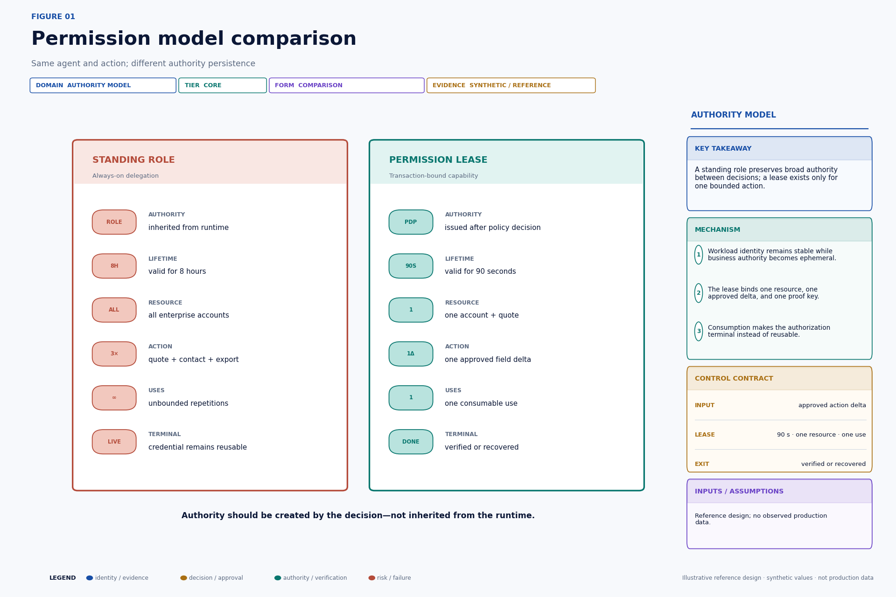
This is not an argument against identity. An agent still needs a cryptographically verifiable workload identity. It is an argument against treating identity, authentication, and business authorization as the same thing. A workload identity answers which process is calling. A permission lease answers what this process may do now, to which object, within which limits, because of which decision.
A standing role is pre-positioned blast radius#
Suppose the compromised process holds crm.enterprise.write. That label may resolve to dozens of endpoints and hundreds of business mutations. An attacker can search horizontally across accounts, vertically across related resources, and repeatedly across the token lifetime. The role was probably granted for integration convenience, not because every action is simultaneously necessary.
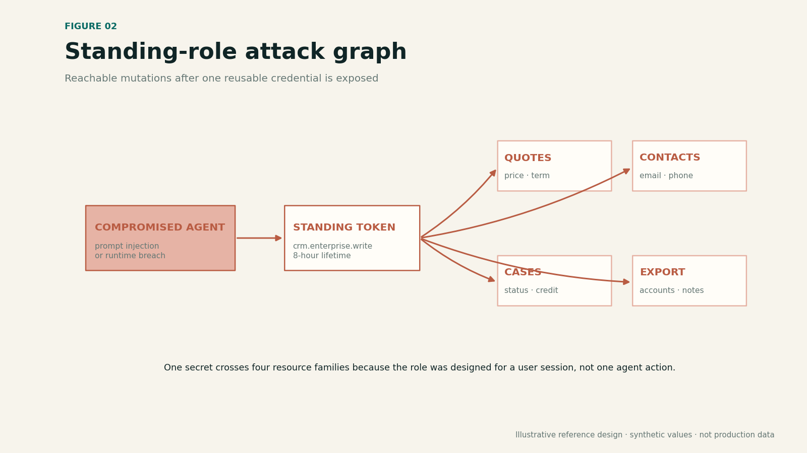
Prompt injection is only one entry point. The same authority can be exercised after runtime exploitation, malicious tool output, poisoned memory, dependency compromise, operator error, leaked logs, or a confused-deputy flow. The security property should therefore survive model failure. “The model will refuse” is not a control boundary when the downstream API will accept the request.
Reducing the role from administrator to editor helps, but only along one dimension. A scoped, four-hour bearer token can still be replayed from another machine. A 90-second bearer token can still change every quote if its scope is broad. A one-account token can still be used repeatedly if consumption is not tracked. Controls multiply; they do not substitute for one another.
The architectural question is not “Which role should this agent have?” It is “What is the smallest authority object the system can derive from this decision?”
A lease is a decision, represented as authority#
“Permission lease” is an architectural term in this design, not a new standardized OAuth token type. The underlying artifact could be a signed access token, an opaque handle, a capability, a transaction token, a cloud session credential, or a service-specific authorization object. What matters is the contract: authority is created after a current decision, bound to one transaction, and designed to disappear.
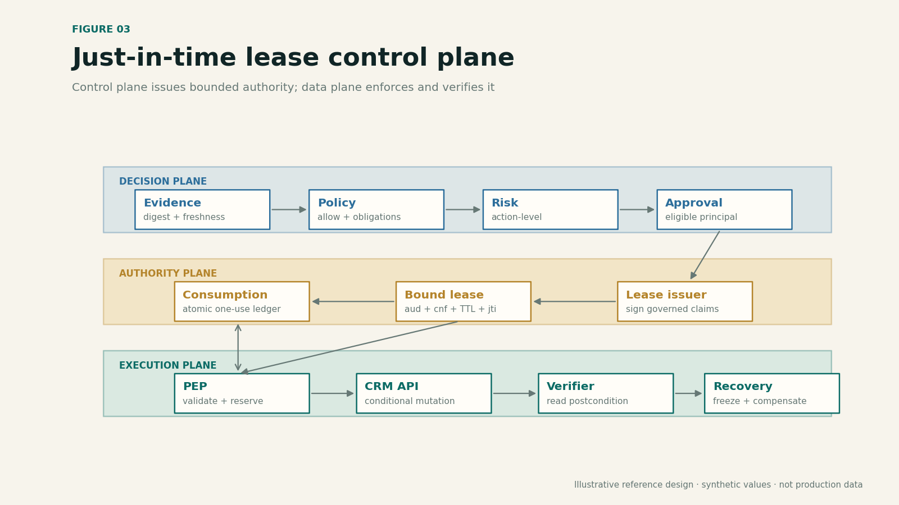
The agent begins with workload identity and read access appropriate to evidence gathering. It sends a proposed business action—not an arbitrary API call—to a policy enforcement point. The request is normalized, enriched with current context, and evaluated by a policy decision point. High-risk actions are presented to an eligible human as exact, structured deltas. An issuer then creates authority from the policy result and approval, while the target service independently enforces the lease.
The narrowing path should be explicit. A human might be entitled to edit all enterprise accounts. The agent is allowed to propose only a class of quote changes. The resource indicator selects the CRM API. Rich authorization selects one account and one quote. Constraints select one field transition. The lease lifetime limits time. A consumption record limits repetitions.
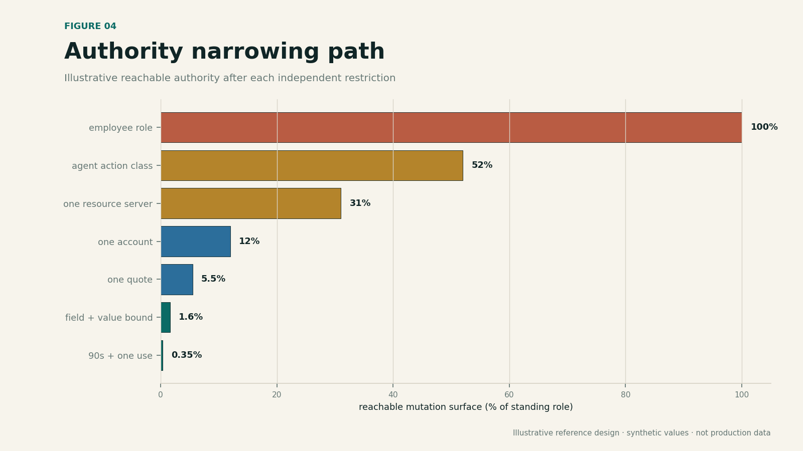
A useful lease can be modeled as the tuple below:
L = <iss, sub, act, aud, resource, action, constraints,
evidence, approval, cnf, nbf, exp, jti, uses>sub is the principal on whose behalf the work occurs; act identifies the agent workload acting in that chain. aud limits the resource server. resource, action, and constraints describe the business mutation. evidence and approval bind the decision inputs. cnf binds a proof key. nbf and exp bound time. jti and uses support replay detection and consumption.
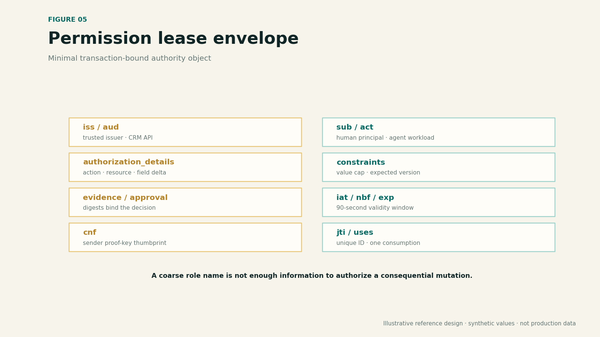
Here is an illustrative signed payload. Names under authorization_details, evidence, and approval are application claims; they require a governed schema, versioning, validation, and collision-safe naming in a real implementation.
{
"iss": "https://auth.example/lease-issuer",
"sub": "user:account-executive-184",
"act": { "sub": "spiffe://example.com/ns/crm/sa/renewal-agent" },
"aud": "https://crm-api.example",
"authorization_details": [{
"type": "crm_quote_change",
"locations": ["https://crm-api.example/accounts/42/quotes/771"],
"actions": ["discount.apply"],
"field": "discount_pct",
"from": 0,
"to": 8,
"expected_version": 19
}],
"evidence": { "sha256": "bba2…19ef", "version": 7 },
"approval": { "id": "apr_01J…", "proposal_sha256": "81de…0a44" },
"cnf": { "jkt": "0ZcO…mZQ" },
"nbf": 1787321100,
"exp": 1787321190,
"jti": "lease_01J…",
"uses": 1
}The lifecycle is deliberately asymmetric. Issuance can move to consumed, expired, or revoked; it cannot silently return to active. A failed attempt does not automatically make the same lease reusable. Whether a safe retry receives a replacement lease depends on the idempotency record and observed downstream state.
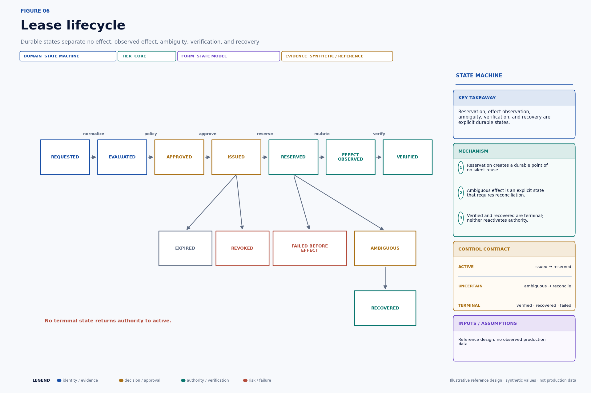
Build from standards, not from a magic JWT#
The pattern can be assembled from established identity and authorization mechanisms. NIST’s 2026 concept paper on software and AI agent identity and authorization frames the problem directly: agents need distinct identity and authorization controls as they act across systems. The implementation still needs precise protocol choices.
SPIFFE’s Workload API can provide the runtime with a short-lived workload identity without shipping a long-lived secret in configuration. That proves the actor. It does not, by itself, grant the actor permission to apply a particular discount.
OAuth 2.0 Token Exchange, RFC 8693, supplies a vocabulary for exchanging a subject token and, when appropriate, an actor token for a different security token. Its delegation semantics and act claim can preserve who is acting for whom. OAuth Resource Indicators, RFC 8707, let a client identify the intended protected resource. Rich Authorization Requests, RFC 9396, provide structured authorization_details when a flat scope string cannot express the transaction.
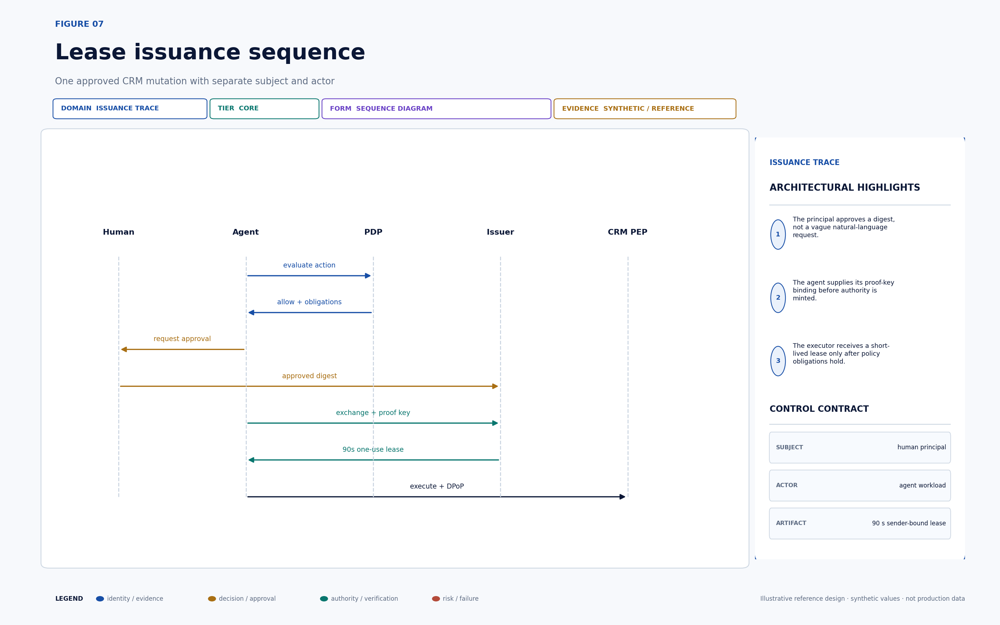
An illustrative token exchange request could look like this:
POST /oauth2/token HTTP/1.1
Host: auth.example
Content-Type: application/x-www-form-urlencoded
DPoP: eyJ0eXAiOiJkcG9wK2p3dCIs…
grant_type=urn:ietf:params:oauth:grant-type:token-exchange&
subject_token=eyJ...human-delegation...&
subject_token_type=urn:ietf:params:oauth:token-type:access_token&
actor_token=eyJ...agent-workload...&
actor_token_type=urn:ietf:params:oauth:token-type:access_token&
resource=https%3A%2F%2Fcrm-api.example&
authorization_details=%5B%7B%22type%22%3A%22crm_quote_change%22%2C...%7D%5DThe authorization server must not merely copy requested details into a token. It should verify the subject and actor relationship, authorize the requested resource, re-evaluate policy, cap every constraint, bind the proof key, and set a lifetime derived from risk. The response may be an access token, but its acceptance at the CRM must depend on the full contract.
The AuthZEN Authorization API 1.0 offers a standard request/response shape for asking an external authorization service about subject, action, resource, and context. The policy decision point can return a decision plus application obligations that the enforcement point must implement.
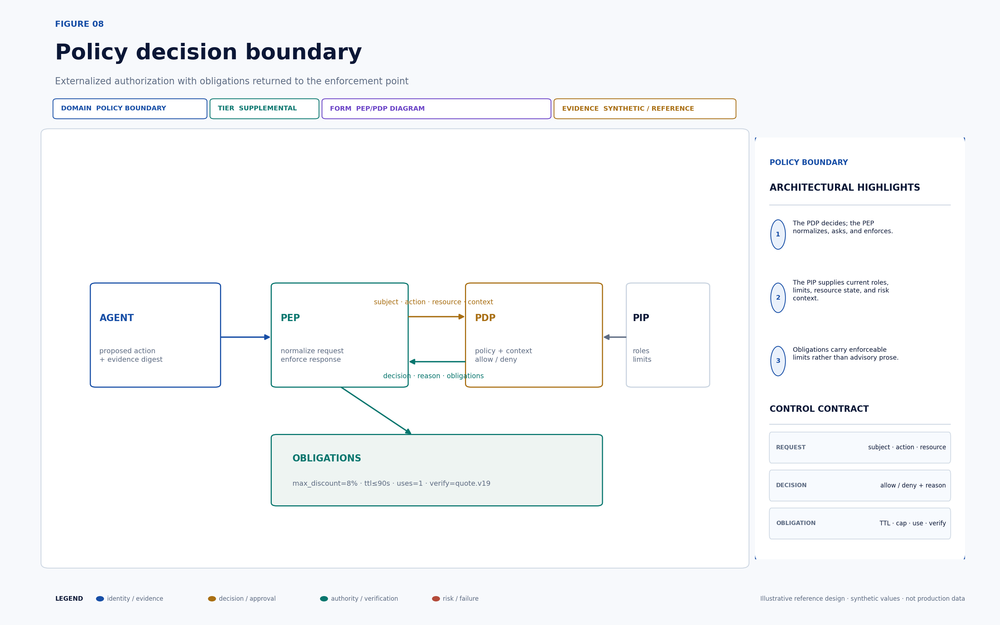
{
"subject": {
"type": "identity",
"id": "spiffe://example.com/ns/crm/sa/renewal-agent",
"properties": { "on_behalf_of": "user:account-executive-184" }
},
"action": {
"name": "discount.apply",
"properties": { "from": 0, "to": 8 }
},
"resource": {
"type": "crm_quote",
"id": "quote:771",
"properties": { "account_tier": "enterprise", "version": 19 }
},
"context": {
"evidence_sha256": "bba2…19ef",
"proposal_sha256": "81de…0a44",
"approval_id": "apr_01J…"
}
}{
"decision": true,
"context": {
"reason": "enterprise-discount-with-approved-limit",
"obligations": {
"discount_pct_lte": 8,
"ttl_seconds_lte": 90,
"uses": 1,
"expected_version": 19,
"verification": "quote.discount_pct == 8"
}
}
}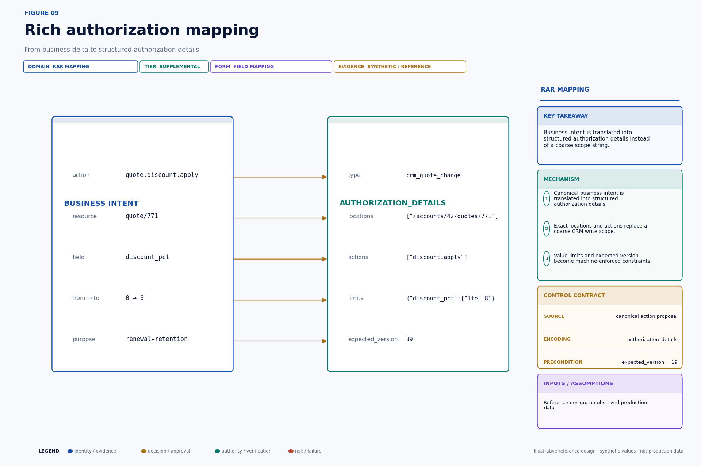
For sender constraint, DPoP, RFC 9449, binds an access token to a client-held asymmetric key and proves possession on requests. Mutual TLS is another established option. The OAuth 2.0 Security Best Current Practice, RFC 9700, recommends sender-constrained access tokens when feasible. Sender constraint means a copied token is insufficient without the corresponding private key; it does not make an authorized but malicious process safe.
Two transaction-token documents are relevant but must be described accurately. The IETF OAuth working-group transaction token draft is ongoing standards work. The separate Transaction Tokens for Agents draft is an individual Internet-Draft with no formal IETF standing. Both are informative for design discussion; neither should be represented as a final standard.
Quantify exposure without pretending it is certainty#
“Least privilege” becomes operational only when teams can compare designs. A simple upper-bound model for one compromised credential is:
B = V × S × U × P × (1 − C)
V = reachable business value
S = fraction of resources and actions in scope
U = executable uses during validity
P = downstream propagation multiplier
C = combined effectiveness of independent controls, bounded [0, 1]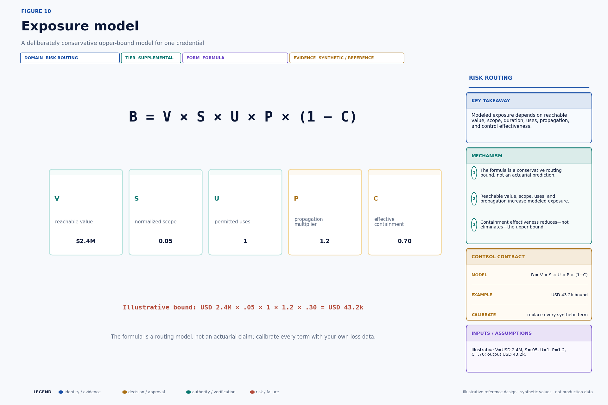
This is not an actuarial truth. The factors are correlated, U may be capped by API rate and business logic, and control effectiveness is not directly observable. Use the model to reveal design assumptions and compare architectures—not to print a precise loss forecast.
The heatmap below varies only lifetime and resource breadth while keeping other synthetic assumptions fixed. The interaction matters: a broad token with a long lifetime creates more search time, more reachable objects, and more repeatable mutations. Shortening lifetime from an hour to five minutes helps; narrowing from 100 records to one helps; doing both helps substantially more.
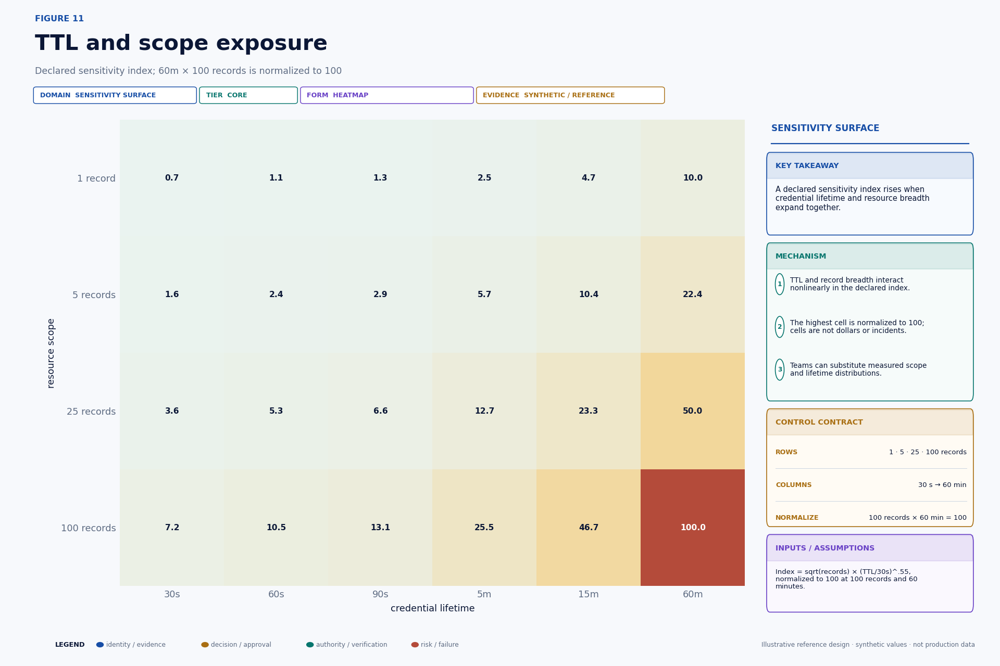
Lifetime also changes the chance that a compromise overlaps valid authority. If compromise opportunities arrive as a Poisson process with rate λ, a simple illustrative overlap probability over lifetime T is:
P(overlap during valid authority) = 1 − exp(−λT)The model is intentionally crude. Real attacks are clustered, adversaries wait for valuable moments, and compromise probability changes with workload behavior. The useful result is directional: when no action is pending, T = 0 for business authority and the overlap opportunity for that authority disappears.
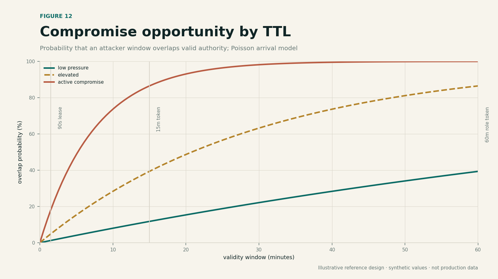
Replay needs its own dimensions. Audience binding rejects a CRM token at billing. Resource binding rejects it against another quote. Sender constraint rejects presentation without the agent’s proof key. One-use consumption rejects a second accepted request. Idempotency prevents an ambiguous retry from creating a second business effect. Each control closes a different replay path.
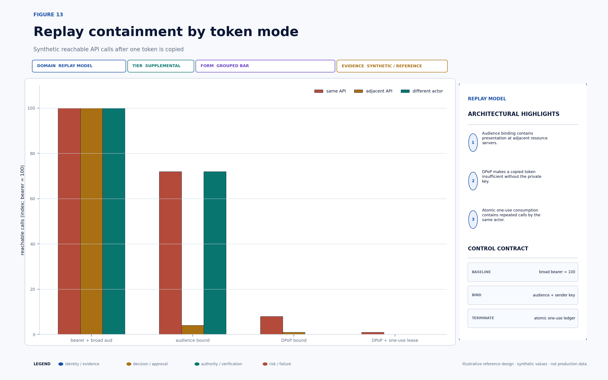
The tail matters more than the average. The following Monte Carlo result uses 20,000 synthetic compromises per permission model. The distributions and parameters are illustrative; they are not empirical breach data. The standing role produces a long loss tail because one compromise can reach many resources repeatedly. A scoped but long-lived token improves the median but retains reuse. The one-use lease compresses both scope and repetitions.
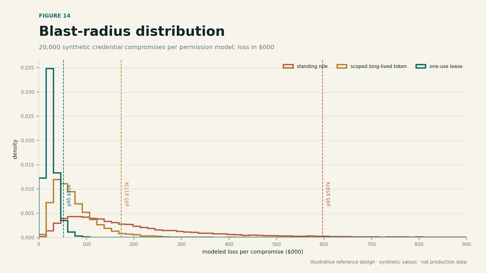
Bind the lease to where, what, why, and who#
An API should reject a validly signed token that was minted for another audience. It should also reject a token for the correct API but the wrong object. Issuer trust and signature validity are necessary—not sufficient—acceptance conditions.
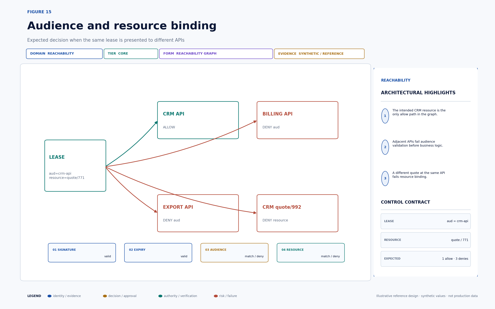
The lease issuer should construct claims from an authorization decision, not from free-form model output. The policy must deny unknown action types, unknown resources, missing values, unrecognized schema versions, stale evidence, ineligible approvers, and constraints that exceed server-side limits. Default denial is especially important during schema evolution: a new field must not inherit permission because an old policy ignored it.
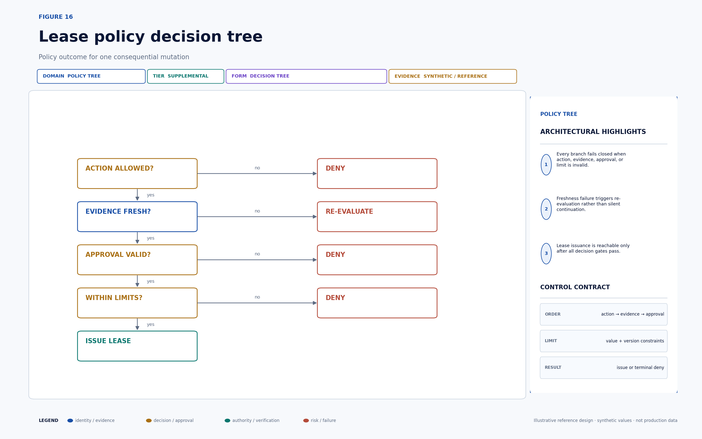
One possible policy in Open Policy Agent’s Rego language is shown below. Production policy would also verify organization boundaries, approver separation, evidence source requirements, incident state, data classification, and emergency modes.
package crm.permission_lease
import rego.v1
default allow := false
allow if {
input.action.name == "discount.apply"
input.resource.type == "crm_quote"
input.resource.id == input.approval.resource_id
input.resource.version == input.action.expected_version
input.action.to >= 0
input.action.to <= 8
input.evidence.age_seconds <= 300
input.evidence.sha256 == input.approval.evidence_sha256
input.proposal.sha256 == input.approval.proposal_sha256
input.approval.status == "approved"
input.approval.approver_id != input.subject.actor_id
"sales_discount_approver" in input.approval.approver_roles
}
obligations := {
"audience": "https://crm-api.example",
"ttl_seconds": 90,
"uses": 1,
"expected_version": input.resource.version,
"proof_key_jkt": input.subject.proof_key_jkt,
"verify": {"field": "discount_pct", "equals": input.action.to},
} if allowApproval is not a boolean floating beside the action. Canonicalize the proposal, hash it, hash the evidence manifest, and have the approval bind both digests plus the applicable limits and policy version. At issuance and execution, recompute the digests. If the agent changes 8 percent to 12 percent after approval, the proposal hash no longer matches. If a new quote version appears, the precondition no longer matches.
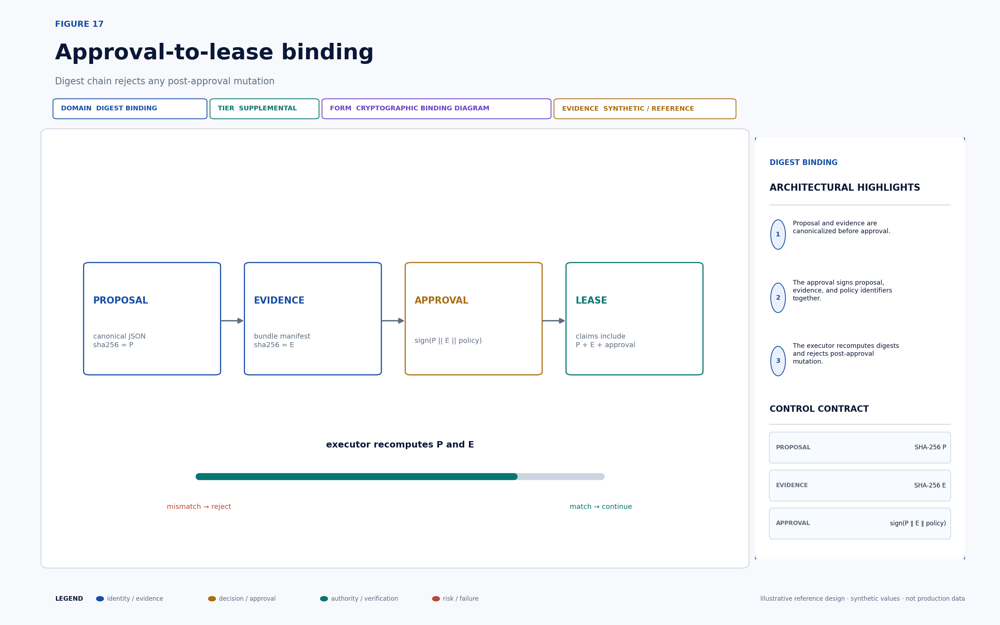
Canonicalization itself must be specified. Different JSON key order, number representation, Unicode normalization, or omitted defaults cannot be allowed to create accidental mismatches—or worse, inconsistent interpretations. Use a defined canonical representation and sign or hash the exact bytes that the executor will interpret.
Enforce at the last responsible moment#
The issuer is not the final authority. The protected API is. Its policy enforcement point must validate every security and business condition before changing state. A library that checks only signature and expiry is insufficient.
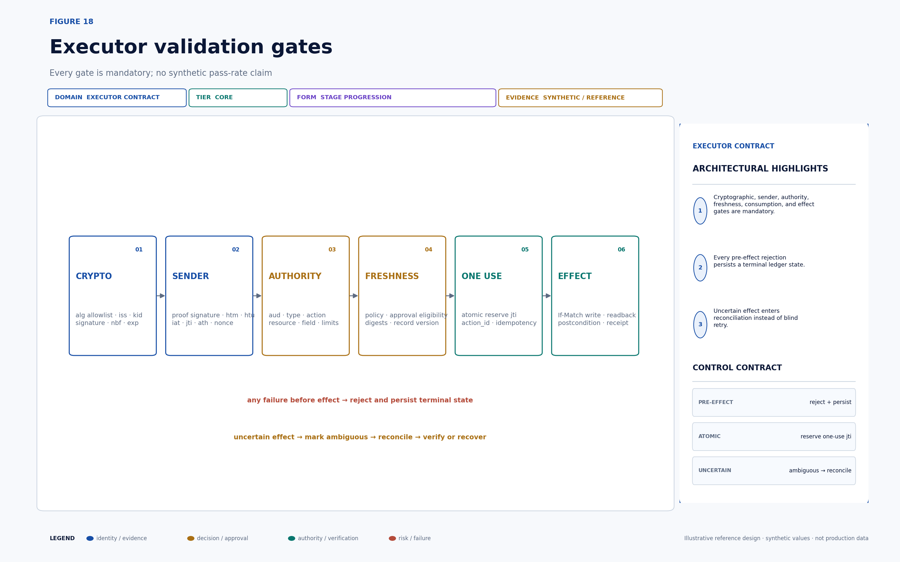
An executor should perform at least these checks: trusted algorithm and issuer; exact audience; not-before and expiry with bounded clock skew; sender proof and HTTP request binding; unique lease identifier; one-use reservation; recognized authorization schema; exact method, action, object, and delta; current policy; current resource version; approval and evidence digests; business invariants; idempotency state; and postcondition verification.
def execute_quote_change(http_request, lease_token, dpop_proof):
lease = verify_jws(
lease_token,
allowed_algorithms={"ES256"},
trusted_issuers={LEASE_ISSUER},
)
require_time_window(lease["nbf"], lease["exp"], max_ttl=90, skew=5)
require_exact_audience(lease["aud"], CRM_API_AUDIENCE)
verify_dpop(dpop_proof, http_request, lease["cnf"]["jkt"])
authz = parse_known_authorization_details(lease, "crm_quote_change", version=1)
require_exact_action(authz, "discount.apply")
require_exact_resource(authz, http_request.path)
require_body_matches_authorized_delta(http_request.json, authz)
# Atomic: only one executor may reserve this lease identifier.
reservation = consumption_store.reserve_once(
jti=lease["jti"],
expires_at=lease["exp"],
action_id=http_request.headers["Idempotency-Key"],
)
current = crm.read_quote(authz.quote_id)
require_equal(current.version, authz.expected_version)
require_policy_still_allows(lease, authz, current)
require_bound_digests(lease, authz)
try:
result = crm.conditional_update(
quote_id=authz.quote_id,
expected_version=authz.expected_version,
patch={authz.field: authz.to_value},
idempotency_key=reservation.action_id,
)
observed = crm.read_quote(authz.quote_id, consistency="strong")
require_equal(observed.discount_pct, authz.to_value)
return receipts.commit_success(lease, authz, result, observed)
except Exception as error:
observed = crm.read_quote(authz.quote_id, consistency="strong")
return reconcile_or_recover(reservation, lease, authz, observed, error)The consumption reservation must be atomic and durable. A local in-memory cache is not sufficient when executors scale horizontally. The store should treat jti plus action identity as a state machine: unseen, reserved, effect-observed, verified, failed-before-effect, ambiguous, or recovered. An outage should fail closed for new high-risk mutations while still allowing reconciliation of already-reserved actions.
Time bounds do not solve concurrent state. An approval may be 20 seconds old and still stale because a human edited the quote one second ago. Bind an expected version or entity tag and use conditional mutation. A version mismatch is not a retryable transport error; it invalidates the decision context.
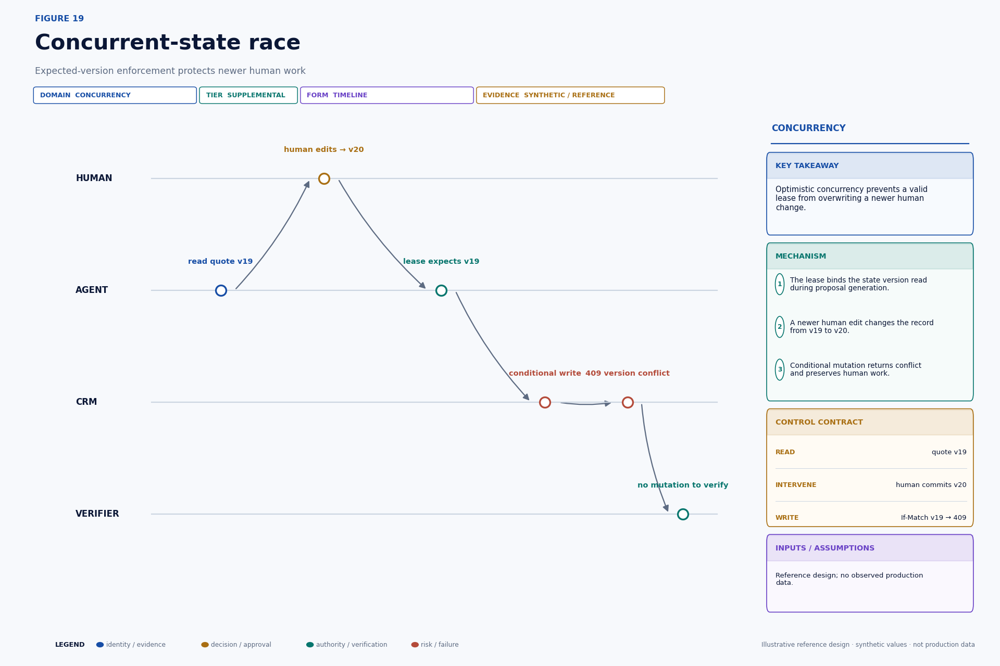
Exactly-once business execution is usually unattainable across a network boundary. Design for at-most-one intended effect plus deterministic reconciliation. Give the action a stable idempotency key before the first attempt. Have the downstream system store the key with the mutation. If the caller loses the response, a retry returns the previous result or enters reconciliation rather than applying the delta again.
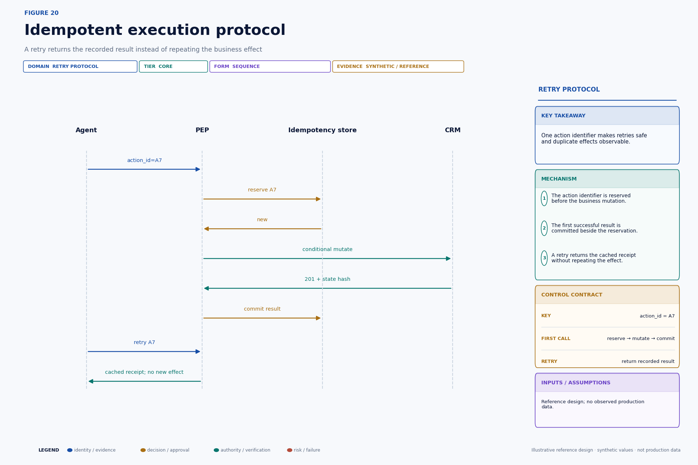
The one-use lease and idempotency key solve different problems. jti prevents authority from authorizing a second action. The idempotency key prevents repeated delivery of the same authorized action from causing a second effect. Keep both.
Verification and receipts are part of authorization#
An HTTP 200 proves only that one component returned 200. It does not prove the intended field changed, no unauthorized field changed, the side effect propagated, or the customer-facing representation is correct. Verification must compare the approved postcondition with independently observed business state.
The immutable action receipt should join the decision and the outcome: actor, principal, proposal, evidence digest, policy version, approval, lease identifier, proof-key thumbprint, request digest, idempotency key, target version, response digest, observed post-state, verification result, timestamps, and recovery pointer.
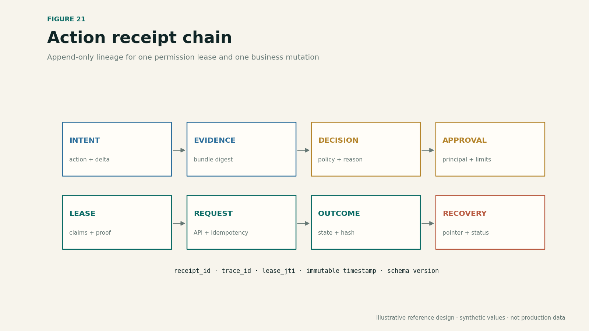
{
"receipt_id": "rcpt_01J…",
"trace_id": "7f6d…",
"action_id": "act_01J…",
"lease_jti": "lease_01J…",
"principal": "user:account-executive-184",
"actor": "spiffe://example.com/ns/crm/sa/renewal-agent",
"proposal_sha256": "81de…0a44",
"evidence_sha256": "bba2…19ef",
"policy": { "id": "crm-discount", "version": "2026-08-17.4" },
"approval_id": "apr_01J…",
"request_sha256": "a112…fc09",
"target": { "quote_id": "771", "before_version": 19, "after_version": 20 },
"observed": { "discount_pct": 8, "unexpected_fields": [] },
"verification": { "status": "matched", "checked_at": "2026-08-21T09:14:33Z" },
"recovery": null,
"schema_version": 1
}Do not log raw tokens, DPoP private keys, entire customer payloads, or unnecessary personal data in the receipt. Record stable identifiers, digests, decisions, and the minimum evidence needed for audit and recovery. Access to receipts should itself be authorized and retention-governed.
No single control contains every failure#
Security reviews often ask for one decisive mechanism: “We use short-lived JWTs,” “We require approval,” or “We have DPoP.” Each statement covers only part of the failure space. Short lifetime reduces exposure but does not prevent a fast attacker. Approval reduces unauthorized intent but can become stale. DPoP reduces off-device replay but does not stop a compromised holder. One-use state limits repetition but does not correct an over-broad action. Verification detects divergence but occurs after an attempted effect.
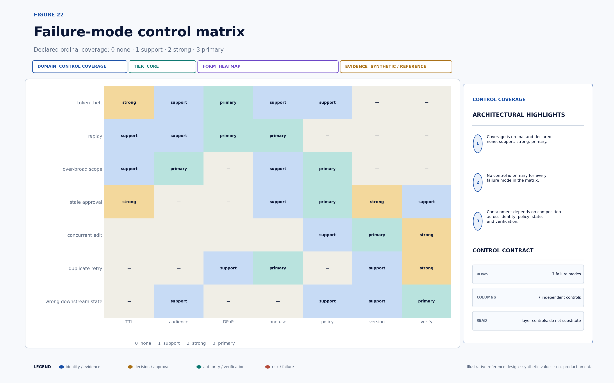
Design explicitly for these failure modes:
• Issuer unavailable: deny new consequential actions; do not fall back to standing credentials.
• Policy service unavailable: use a narrow fail-closed mode, with separately governed break-glass procedures for humans.
• Consumption store partitioned: reject new uses; preserve reconciliation access for already-reserved actions.
• Downstream timeout: inspect the idempotency record and target state before deciding whether to retry.
• Verification mismatch: freeze further automation on the object, write an incident receipt, and run a compensating workflow.
• Key compromise: revoke the workload identity and proof key, stop issuance, and invalidate eligible outstanding leases.
• Clock divergence: monitor skew and reject outside a small, explicit tolerance; do not widen TTL casually.
• Policy rollout error: canary by action class, retain decision traces, and support rapid rollback to the last approved bundle.
Recovery must be designed before autonomy. Some effects can be reversed with a compensating transaction; others, such as a sent customer message or disclosed export, cannot be “undone.” For irreversible actions, prevention and approval deserve more weight than rollback theater.
The control plane must be operable#
A permission system that adds seconds to every action will be bypassed. Build an explicit latency budget. The illustrative path below allocates 307 milliseconds at p95 across normalization, policy, approval lookup, token exchange, proof signing, CRM mutation, verification, and receipt persistence, under a 350-millisecond control-path objective. The values are synthetic and exclude human review time.
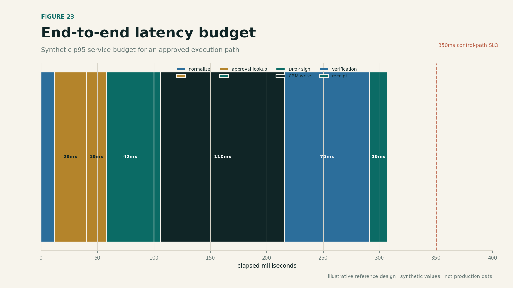
Precompute what is safe to precompute: compiled policy bundles, approver eligibility, schema validators, resource metadata, and workload trust chains. Do not precompute the authorization decision when it depends on mutable evidence, object version, approval, or action value. Cache inputs with clear freshness rules; never turn a cache into a hidden standing grant.
Availability is only half of the operating picture. A control plane can be available while issuing overly broad leases, accepting replay, or missing downstream divergence. Track issuance and enforcement semantics together.
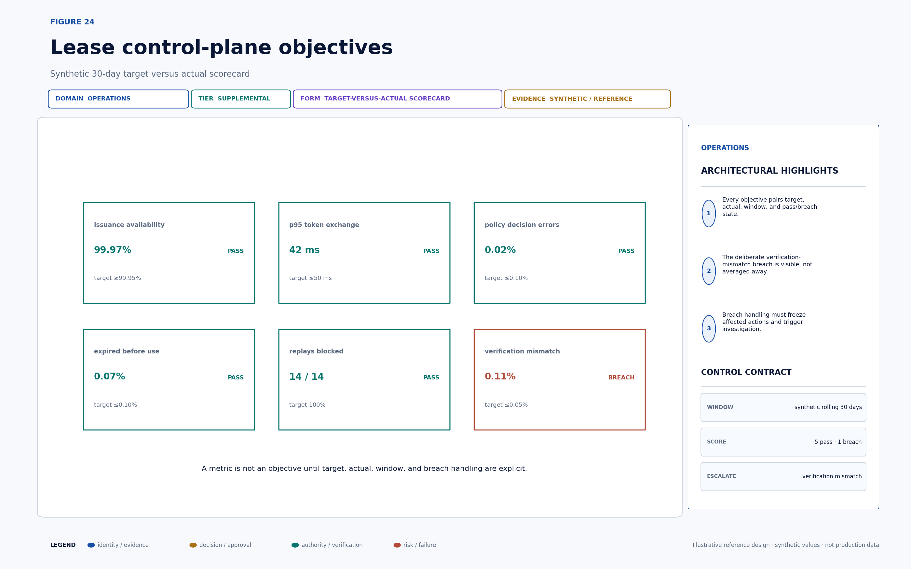
Useful signals include issued leases by action class; requested versus granted TTL and scope; policy allow, deny, and error rates; approval age at execution; unused expiry rate; DPoP failure; audience mismatch; duplicate jti; idempotent replay; precondition conflict; verification mismatch; recovery time; and break-glass use. Alert on distribution shifts, not only hard failures. A sudden fall in denials may indicate a broken policy as readily as a sudden rise.
The receipt stream also supports security analytics. Correlate one actor requesting many resources, repeated near-limit proposals, proof-key changes, bursts of expired leases, unusual approval relationships, and high reconciliation rates. Preserve the difference between a policy denial, authentication failure, stale decision, replay attempt, business conflict, and downstream fault; collapsing them into “403” destroys diagnostic value.
Migrate one action class at a time#
Do not replace every role in one release. First inventory the actual credentials, scopes, endpoints, resource families, business mutations, and human principals in use. Many teams discover that the documented role is not the effective role because application-side permissions, service accounts, delegated user tokens, and downstream integrations combine.
Then run authorization in shadow mode. Normalize proposed actions and ask the future policy decision point, but do not change enforcement. Compare decisions with observed production behavior and investigate mismatches. Shadow mode is for policy learning, not evidence that the system is safe.
Move low-impact internal actions first: create a task, attach an internal note, or reserve a non-scarce resource. Add one-use leases, target-side enforcement, receipts, verification, and recovery. Next move consequential actions behind human approval. Only after failure data, recovery drills, and error budgets are healthy should selected action classes receive bounded autonomous approval.
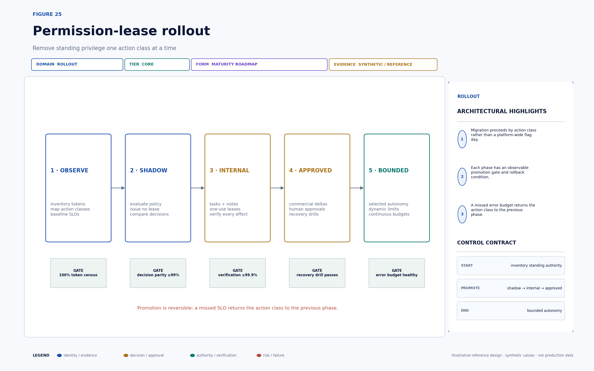
A production rollout gate can require:
• complete mapping from semantic action to endpoints and fields;
• deny-by-default policy coverage for every schema version;
• exact audience, resource, delta, value, time, proof-key, and use binding;
• atomic consumption and idempotent downstream behavior;
• precondition enforcement at the protected resource;
• postcondition verification from an authoritative read path;
• tested recovery for success, failure-before-effect, failure-after-effect, and ambiguous outcome;
• receipt completeness and privacy review;
• key rotation, issuer outage, policy rollback, and clock-skew drills;
• owner-approved SLOs and error budgets by action class.
Promotion should be reversible. If verification mismatch, issuer error, policy drift, or recovery time exceeds its budget, return the action class to approval-required or proposal-only mode. “Autonomous” is an operating state, not a permanent badge.
What permission leases do not solve#
A lease limits delegated authority; it does not make every component trustworthy. If the issuer’s signing key is compromised, an attacker may mint convincing leases. Protect issuance behind hardened workloads, hardware-backed keys where appropriate, strict policy, multi-party administrative controls, and continuous key rotation.
A lease cannot repair a bad policy. If the server authorizes a 60 percent discount because an eligibility feed is wrong, perfect cryptography faithfully transports the wrong decision. Evidence quality, policy testing, separation of duties, and change governance remain first-class controls.
Sender constraint does not stop a compromised agent process from using its own proof key. It raises the bar against token exfiltration and replay elsewhere. Runtime isolation, egress restriction, tool mediation, memory hygiene, dependency security, and behavioral detection still matter.
One-use semantics do not guarantee one business effect unless the target honors idempotency and conditional state. Verification cannot undo irreversible disclosure. Human approval does not add value if the reviewer sees an opaque summary, is overloaded, or is allowed to approve outside their authority. Short TTL does not help if the system refreshes leases automatically without a new decision.
Finally, a lease is not a substitute for minimizing read access. An agent with no write role can still cause harm if it can continuously exfiltrate sensitive data. Apply the same transaction-aware thinking to high-risk reads, exports, searches, and joins.
The design test#
Ask one question during architecture review: If the agent is fully compromised at this exact moment, what valid business authority already exists inside its process?
If the answer is “an eight-hour token that can edit enterprise CRM records,” the blast radius was pre-positioned. If the answer is “workload identity, proposal rights, and no current mutation authority,” the attacker must also defeat a current policy decision, any required human approval, transaction binding, the proof key, the resource server’s preconditions, one-use consumption, and verification.
That is the point of just-in-time permission leases. They do not assume the model will always reason correctly. They make the surrounding system safe enough to reject, contain, observe, and recover when it does not.
Primary technical references#
• NIST: Accelerating the Adoption of Software and AI Agent Identity and Authorization
• OAuth 2.0 Token Exchange — RFC 8693
• Resource Indicators for OAuth 2.0 — RFC 8707
• OAuth 2.0 Rich Authorization Requests — RFC 9396
• OAuth 2.0 Demonstrating Proof of Possession — RFC 9449
• Best Current Practice for OAuth 2.0 Security — RFC 9700
• OpenID AuthZEN Authorization API 1.0
• SPIFFE Workload API
• Open Policy Agent policy language
• IETF OAuth Transaction Tokens draft
• Individual Internet-Draft: Transaction Tokens for Agents